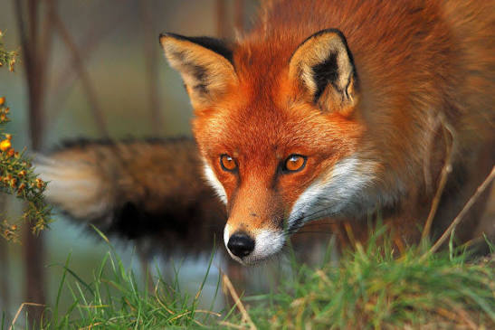

As raposas são mamíferos carnívoros pertencentes à família Canidae (a mesma dos cães, lobos e chacais). Conhecidas por sua inteligência, agilidade e alta capacidade de adaptação, elas habitam quase todos os continentes, desde florestas temperadas e desertos até as regiões polares.
Principais Características e Biologia

Metamorfose Completa:
Iniciam o ciclo de vida como girinos aquáticos, respirando por brânquias e alimentando-se de algas. Durante a metamorfose, desenvolvem pulmões, patas e reabsorvem a cauda para passar à vida terrestre.
Respiração Cutânea e Pulmonar:
Embora possuam pulmões simples, absorvem uma grande percentagem do oxigénio diretamente através da pele, que precisa de se manter constantemente húmida.